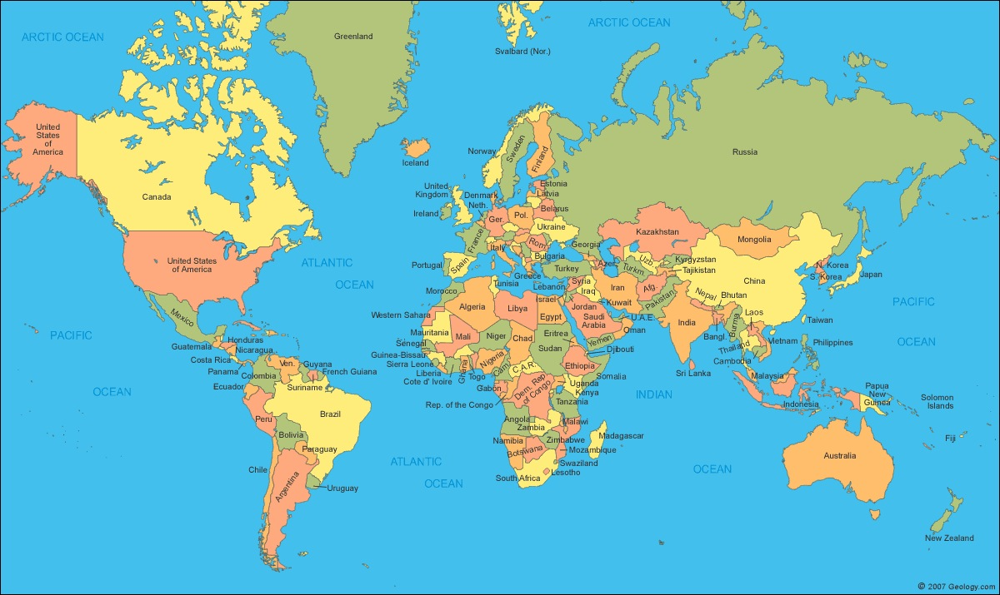

Teaching Point:
Today we will learn how to import an image and make changes to it.
Making a Map of our Explorers Journey

For the next slide, we will not be doing much writing. We will be making a map on Kid Pix and then using it in our Slideshow. We will start by Importing a map of the world into Kid Pix. Importing is the opposite of Exporting. It is when we take a picture or something else and bringing INTO a program like Kid Pix to work on instead of Exporting it which is pushing it out to be put on a blog or whatever else.
Once we Import, we will draw a line connecting the beginning and end of our Explorers' trip. Finally we will Export the Image, and drag it into our Slideshow. To do this:
- In Kid Pix go to the top menu and choose Import -> Graphic
- Find your World Map on the Desktop.
- Draw a line connecting the beginning and end of your explorers trip.
- When you are done, Export it to your Desktop, and put it into your Slideshow.
Today's Assignment
Find the countries your explorer came from and went to and use Kid Pix to show their route on a map.
Back to School Portal